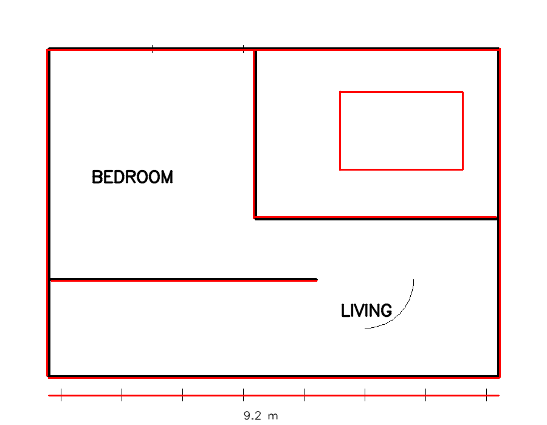

A wall-line extraction to 3D reconstruction pipeline. We strip a messy 2D plan down to clean, axis-aligned wall segments, then extrude them into real geometry.
Raster in, structural linework out, geometry extruded.
Left: extracted wall segments from the demo plan. Right: the extruded 3D result, live above.

Floor plans in the wild are messy. Four steps do the heavy lifting.
Real plans are overwhelmingly orthogonal. Near-vertical segments collapse to their mean x, near-horizontal to their mean y. This alone removes most double-wall artefacts.
Text overlays and dimension ticks break wall strokes. Closing restores them into one continuous line before edge detection runs.
Hough fires many times on a single thick wall. Segments within tolerance of an existing one are dropped, leaving one clean line per wall.
Walls and floor slabs are emitted as plain v/f OBJ, so any 3D tool (Blender, Unity, this page) can load them with zero conversion.
Python 3 + OpenCV. No GPU, no model weights.
git clone https://github.com/zj0808/floorplan-3d-reconstruction.git
cd floorplan-3d-reconstruction
pip install -r requirements.txt
python line_extract.py samples/plan.png -o out/
python reconstruct.py out/plan_demo_graph.json -o out/
Outputs plan_demo.obj, plan_demo_segments.png and
plan_demo_graph.json — the first one is what you see rendered above.